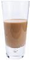
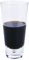

Гостевая Head First без всяких сомнений - наиболее большое кафе в Webville. Остановитесь здесь, чтобы выбрать для себя напиток, чай или кофе. Или останьтесь подольше и насладитесь изысканным кулинарным меню, все блюда в котором очень вкусны и приготовлены только из натуральных продуктов.
Во время вашего пребывания у нас вы будете наслаждаться прекрасной музыкой, а обстановка будет способствовать тому, чтобы пища усваивалась. Не забудьте, что в гостевой предлагается свободный беспроводной доступ в Интернет, и захватите с собой свой ноутбук.
Наша гарантия: мы обязуемся оставлять у вас, наших гостей, только самые лучшие впечатления после каждого посещения гостевой. Не важно, зашли вы к нам просто проверить свою электронную почту за чашечкой чая или заказали грандиозный обед, вы увидите, что наш обслуживающий персонал обращает внимание на каждую мелочь. Если вы чем-то недовольны, отведайте наш чудо-напиток из голубики.
Но это еще не все; в ночное время заходите в наш подвальчик, где постоянный ди-джей играет электронную музыку на просторном танцполе, оформленном в стиле металл. У нас есть комфортабельные белые кабинки в танцевальном баре. Вы можете заказать любой из наших напитков в главном зале, и вам принесут его к танцевальной площадке. И независимо от того, в какой части кафе вы находитесь, у вас всегда будет свободный доступ к Интернету.
Теперь вы наверняка хотите узнать, как нас найти? Мы расположены в самом центре Webville. Чтобы вам было проще нас найти, мы создали указатели. Присоединяйтесь к нам в любое время.
Максимально полезный напиток. Содержит экстракты трав, минералы и витамины, а кусочек лимона в форме завитка придает напитку чудесный мягкий цитрусовый аромат. "Лимонный бриз" зарядит вас энергией на весь день!
Это не традиционный чай. В нем смешаны матэ и чайные специи, а также добавлен шоколадный сироп высшего качества, что придает напитку удивительный вкус ледяного кофе.
Проблемы с памятью? Отведайте наш напиток "Подзарядка для мозга", сделанный из черного чая и небольшого количества эспрессо. Ваш мозг будет вам благодарен за подзарядку.
Заходите к нам каждый вечер и пробуйте эти и другие замечательные напитки.
Нас часто спрашивают о музыке, которая играет в зале, и это неудивительно, так как мы включаем только самое лучшее. Только для вас мы приводим здесь список композиций, который еженедельно обновляется. Наслаждайтесь